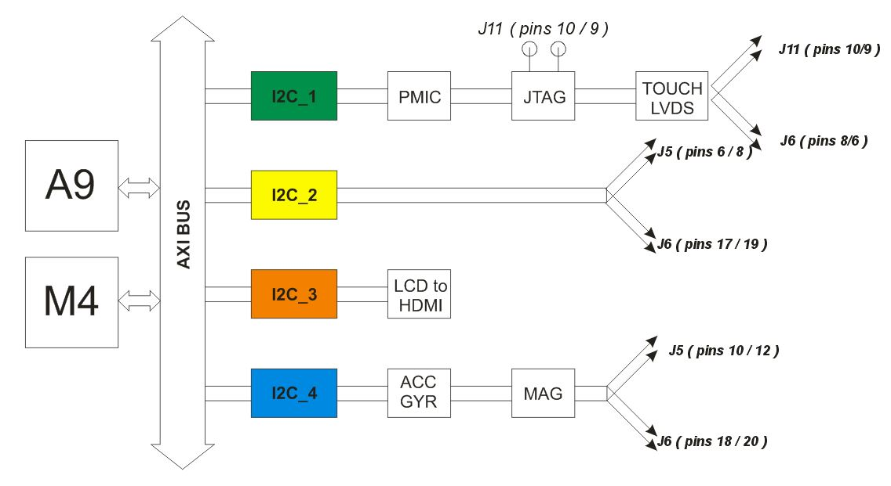
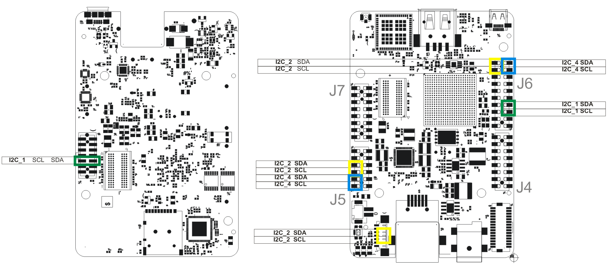

I2C
I2C
The I2C (Inter-IC) bus is a bi-directional two-wire serial bus that provides a communication link between integrated circuits (ICs). Phillips introduced the I2C bus 20 years ago for mass-produced items such as televisions, VCRs, and audio equipment. Today, I2C is the de-facto solution for embedded applications.
UDOO Neo channels
Freescale iMX 6SoloX has 4 I2C channels. In UDOO Neo all four channels are used with different functions available for the user.
In the picture below this functions are listed.
 I2C 1
PMIC
The PF3000 is a Power Management Integrated Circuit (PMIC) designed specifically for use with the Freescale i.MX 7 and i.MX 6SL/SX/UL application processors. With up to four buck converters, six linear regulators, RTC supply, and coin-cell charger, the PF3000 can provide power for a complete system, including applications processors, memory, and system peripherals. This device is powered by SMARTMOS technology.
JTAG
The pads to connect a JTAG debugger are embedded on board, placed on the bottom of the board. The connector is not present to reduce the used space and the costs. JTAG connector uses this channel to exchange data.
LVDS touch panel
Most of the touch panels uses I2C to communicate with A9 core and send touching cohordinates. For example official 7 inches touch panel use this protocol for the connection.
External pin/pads
| HEADER | SDA | SDL |
|---|---|---|
| J6 | 27 | 26 |
| J11 | 10 | 9 |
I2C 2
Channel 2 is by default assigned to A9. It's possible to change this assignment following steps in this section.
External pin/pads
| HEADER | SDA | SDL |
|---|---|---|
| J6 | 15 | 14 |
| J5 | 37 | 36 |
| J10 | * | * |
* These are not the PCB numbers but header numbers
Snan-ip Brisks connector (J10)
On this connector it's possible to plug UDOO Bricks Sensors.
I2C 3
This channel is used to control the LCD to HDMI converter. It can be accessed from the user because it's 1.8 Volts logic. I2C channel 3 is definetly assigned to A9 core.
LCD to HDMI converter
iMX 6SoloX don't have the HDMI controller embedded on the SoC. So we need to use extra hardware to provide the HDMI video output.
I2C 4
This channel is used to connect 9-axis motion sensors. By default is connected to A9 core.
Motion sensors
On this channel are connected the FXOS8700 acc/mag and FXAS2100 gyro but can be plugged also other device on external pins paying to the addresses.
| DEVICE | FUNCTIONS | I2C ADDRESS |
|---|---|---|
| FXOS8700 | Accelerometer / Magnetometer | 0x1E |
| FXAS2100 | Gyroscope | 0x20 |
External pin/pads
The I2C signals are available on the external pinout.
| HEADER | SDA | SDL |
|---|---|---|
| J6 | 33 | 32 |
| J5 | 35 | 34 |